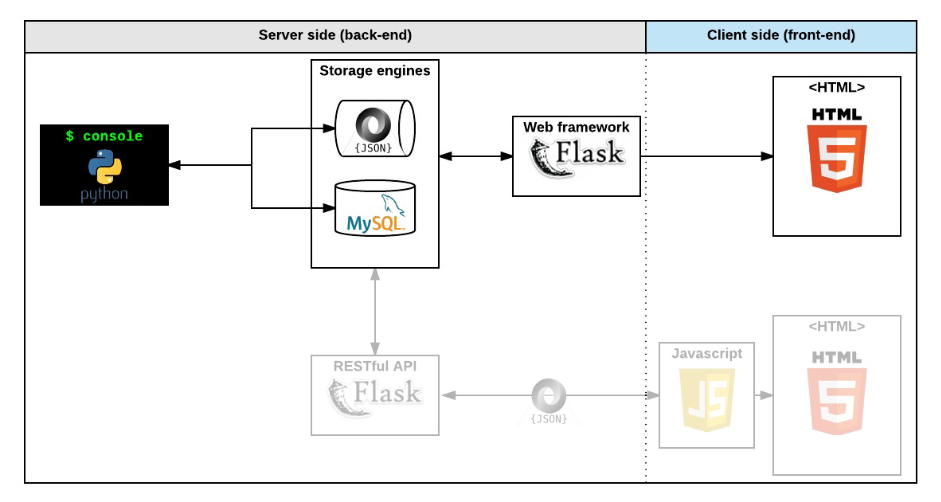

Introduction

Pure Bank is a web application designed to provide comprehensive banking services, including account management, transactions, and financial consulting. Our goal was to create a secure, user-friendly platform that caters to both individuals and businesses looking for efficient financial solutions.
Team Members, Roles, and Timeline
Shakiru Oluwasegun Yusuf: Full Stack Developer
The project commenced in January 2024 and was completed in July 2024.
Target Audience
Pure Bank is created for individuals and businesses seeking a reliable and intuitive online banking platform. Our users can manage their finances seamlessly with features like account creation, transaction history, and personalized financial advice.
Personal Focus
My primary role in this project was as a Full Stack Developer. I worked on the frontend using HTML, CSS, and JavaScript and integrated it with the Flask backend. I also ensured the application maintained a high level of security, particularly concerning user authentication and data protection.
Personal Story
I’ve always been passionate about financial technology and the impact it can have on improving people's financial health. Growing up, I witnessed my parents struggle with managing their finances due to limited resources and knowledge. This inspired me to create Pure Bank, aiming to provide a user-friendly platform that simplifies financial management for everyone.
Working on this project reminded me of the challenges my parents faced and motivated me to develop solutions that can make a difference. My goal was to make financial services more accessible and secure, helping others achieve better financial stability and confidence.
Project Accomplishments
Result Summary
We successfully developed a fully functional banking application that includes:
- Account creation and management
- Transaction management (withdrawals, deposits, transfers)
- Financial consulting services
Architecture Diagram
Technologies Used
Frontend: HTML5, CSS3, JavaScript
Backend: Flask, Python
Database: MySQL
Context: We chose these technologies for their robustness and scalability. Flask was selected for its flexibility and ease of integration with MySQL, while the frontend technologies provided a solid foundation for building a responsive and user-friendly interface.
Features
- Account Management: Users can create and manage their accounts with ease.
- Transaction History: Users can view detailed transaction histories.
- Financial Consulting: Users receive personalized financial advice based on their account activities and goals.
Most Difficult Technical Challenge
One of the most challenging technical aspects of this project was implementing secure user authentication. Here’s how I tackled it:
Situation: Early in the project, I decided to implement secure authentication for user accounts.
Task: The task was to integrate secure password hashing and validation.
Action: I researched various authentication methods and chose Flask's built-in authentication system. However, I encountered issues with the password hashing mechanism not working as expected. After seeking help from the Flask community, I discovered that the PASSWORD_HASHING setting needed proper configuration. I meticulously followed the advice and examples provided by the community, ensuring that every detail was correctly implemented.
Result: After implementing the solution, the authentication system worked perfectly, ensuring user passwords were securely hashed and validated, providing the necessary security for our users' data.
Lessons Learned
Technical Takeaways
Deepened my understanding of Flask's authentication system and best practices for securing user data.
Improved my skills in troubleshooting and seeking help from the developer community.
What I Might Do Differently
I would plan more thoroughly for potential technical challenges to avoid last-minute issues. Proactive research and early testing could have saved time and reduced stress.
Personal Growth
This project taught me the importance of persistence and leveraging community support when facing technical hurdles. I am now more confident in my skills as a full-stack developer.
Future Path
This experience has solidified my interest in financial technology and web development. I am excited to tackle more complex projects in the future, with a stronger focus on security and user experience.
Confirmed or Questioned Beliefs
I realized the power and flexibility of Flask for web development, confirming my preference for using it in future projects.
About Me
My name is Shakiru Oluwasegun Yusuf, a passionate software engineer specializing in full-stack development. I have a keen interest in financial technology and strive to create solutions that improve financial management.
GitHub: Pure Bank Repository
Deployed Project: Pure Bank
Project’s Landing Page: Pure Bank Landing Page
LinkedIn: Shakiru Oluwasegun Yusuf